Translation-ready templates
Ceva × Bynder.
Ad templates ready for every language.
Ceva was launching campaigns in different languages through Bynder. The agency's PSD and After Effects files weren't ready for that, so I optimised them: 15 image templates and 7 video templates, each in 3 sizes.
My role
Fix PSDs → Build image templates → Build video templates → Fix permissions → Hand over
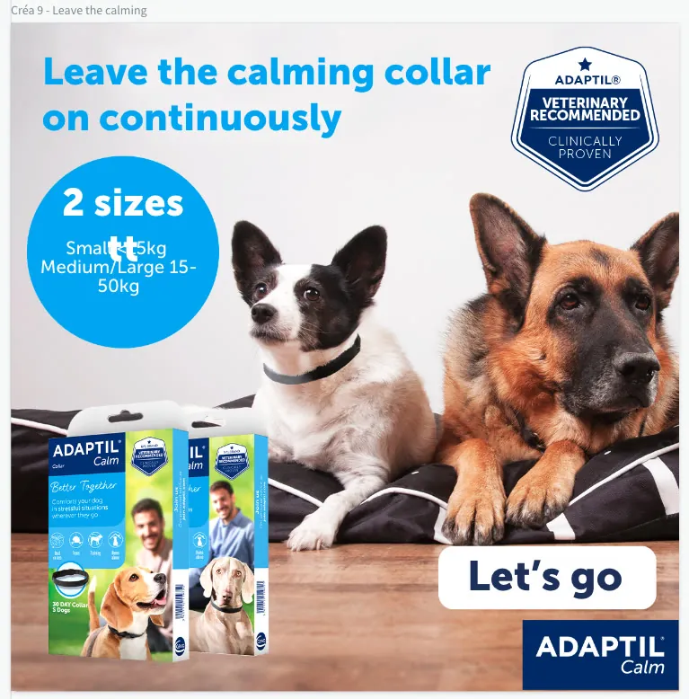
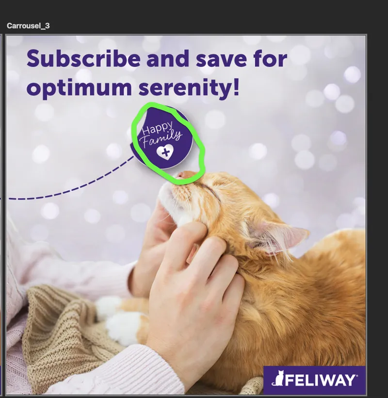
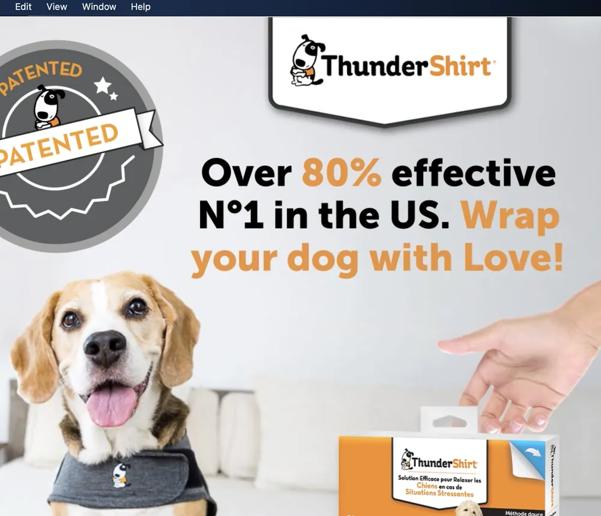
Context
One template.
Every country fills it in.
Ceva makes calming products for pets: FELIWAY for cats, ADAPTIL and ThunderShirt for dogs. They sell them in many countries.
Bynder is where Ceva keeps its brand files. Its templates turn a Photoshop file into a simple form. A country team picks a template, types the text in their language and exports the ad. No designer needed for each country.
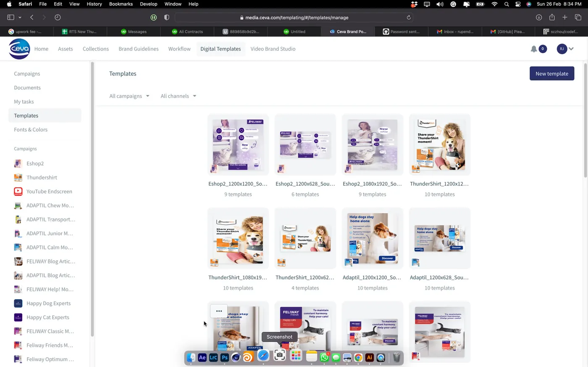
01
Photoshop file
Built by the agency
02
Bynder template
Text set as editable fields
03
Country team
Types in their language
04
Local ad
Exported, ready to post
What I found
Built to look right,
not to translate.
The source files looked finished. But a template needs every piece of text on its own editable layer, in the right font, with room to grow. These didn't have that.
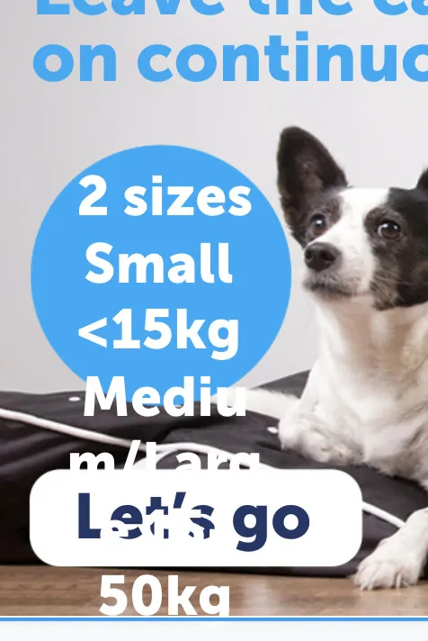
Text broke when it changed.
Text zones were small and fixed. Change the words and the lines crashed into each other.
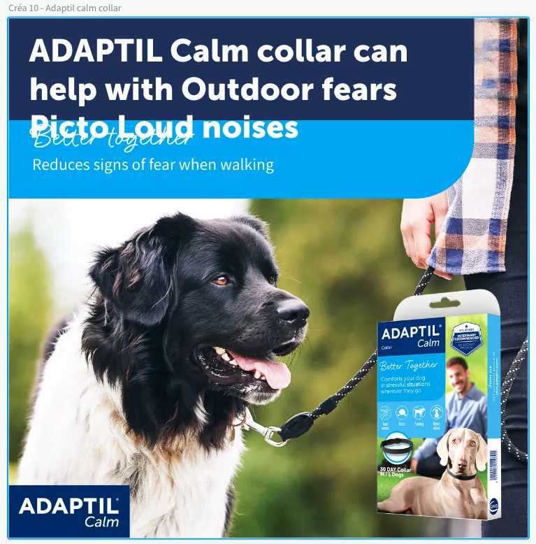
Leftover and merged layers.
Stray text like “Picto Loud noises” sat under the headline. Shapes, text and logos were merged together.
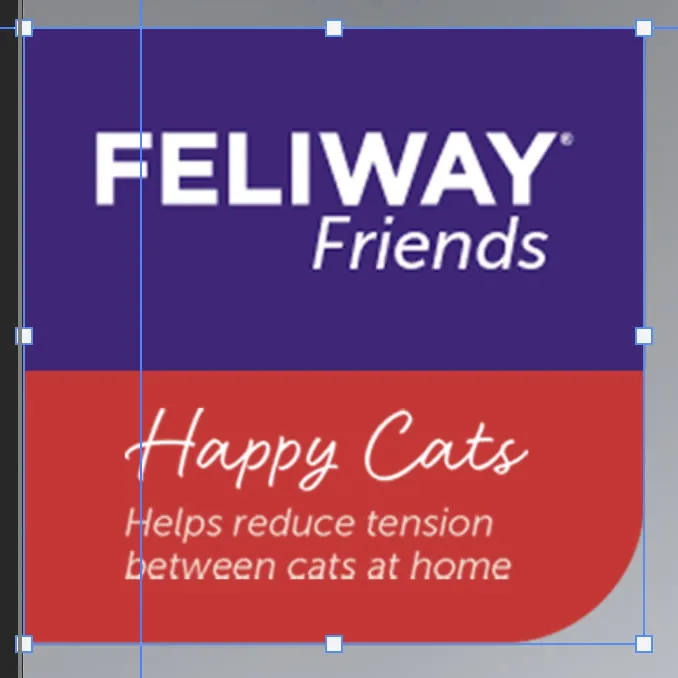
Wrong fonts.
Brand fonts weren't set. “Happy Cats” needs Head Turn Smooth. Body text needs Museo Sans, not Roboto.
What I did
Rebuilt by hand,
file by file.
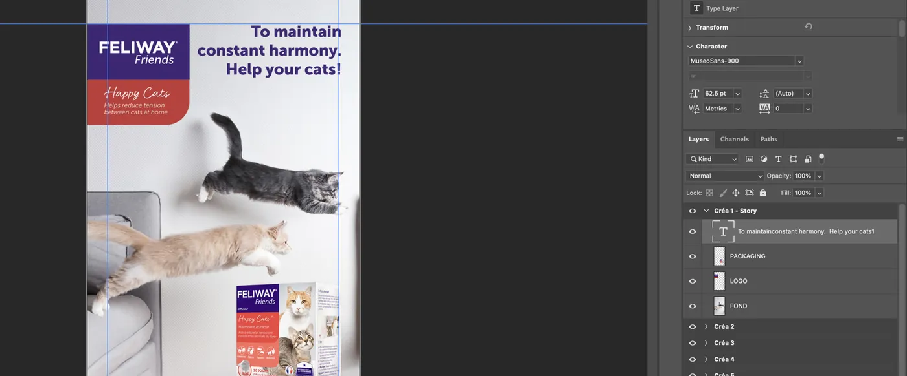
Proof
They look the same.
That's the point.
On screen, almost nothing changes. The work is inside the file. In Bynder, every text layer in a PSD becomes a field that a country team types into. So the layers, fonts and text boxes have to be built for that, or the template breaks the moment someone types a longer language. The numbered boxes show where to look.
Before · NOT optimized.psd · the agency file
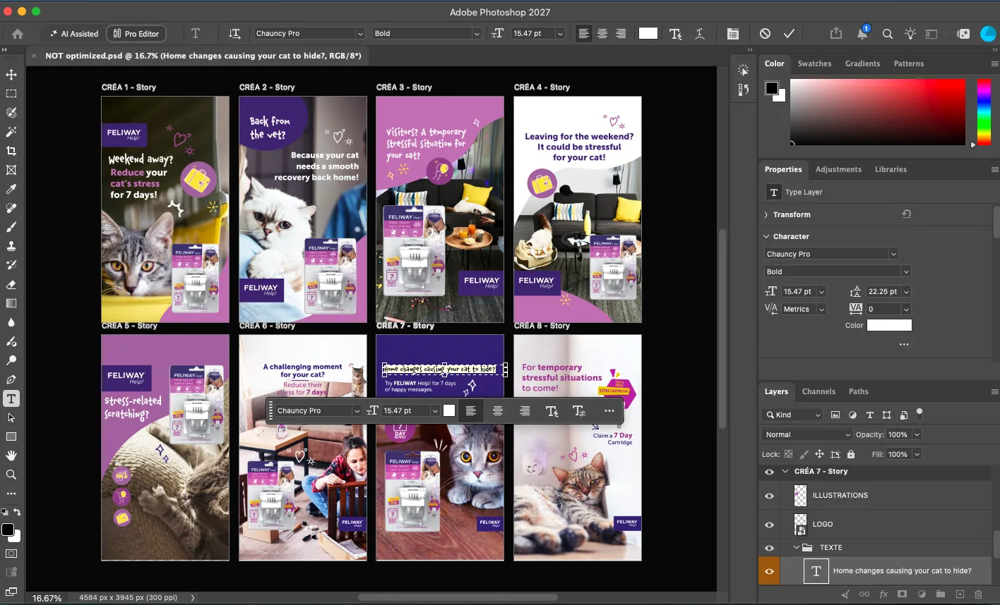
123After · optimized.psd · my rebuilt file
 123
123Up close
Three things that changed
under the surface.
01
Text boxes
Before
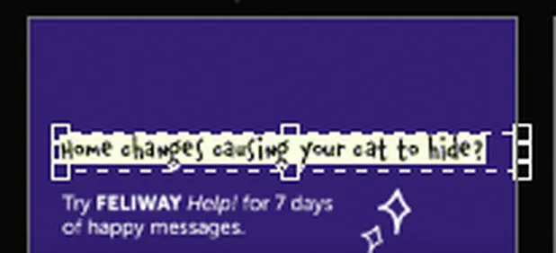
Squeezed tight around the English line, right up to the frame edge. A longer translation had nowhere to go.
After
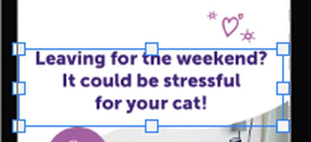
Centred and much wider than the words, so a longer line still fits.
02
Fonts
Before
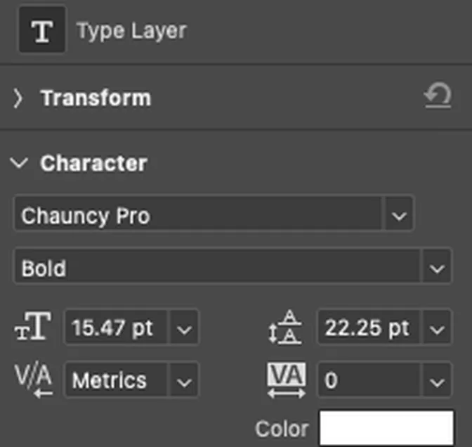
Chauncy Pro Bold, with fixed line spacing (22.25 pt).
After
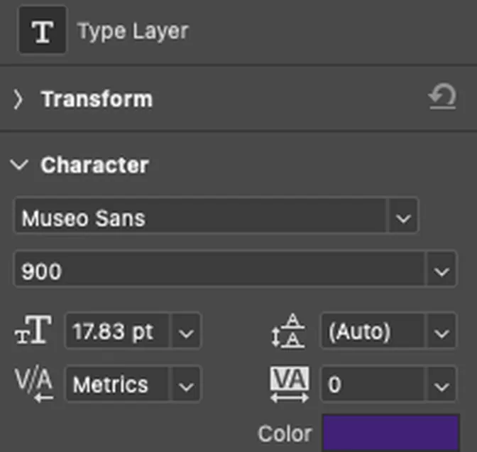
Museo Sans 900, the brand font, with auto line spacing that adjusts if a line wraps.
03
Layer names
Before
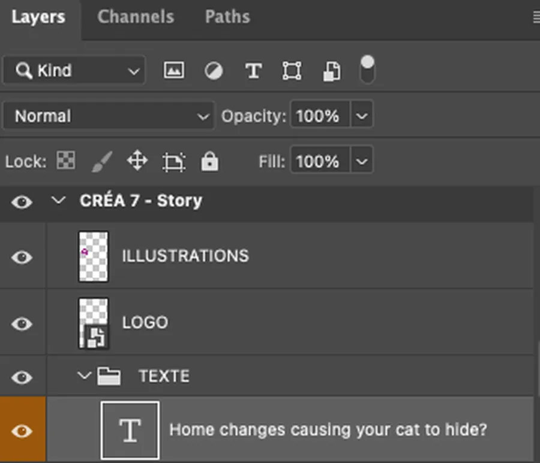
The text layer was named after its English sentence, inside nested folders.
After
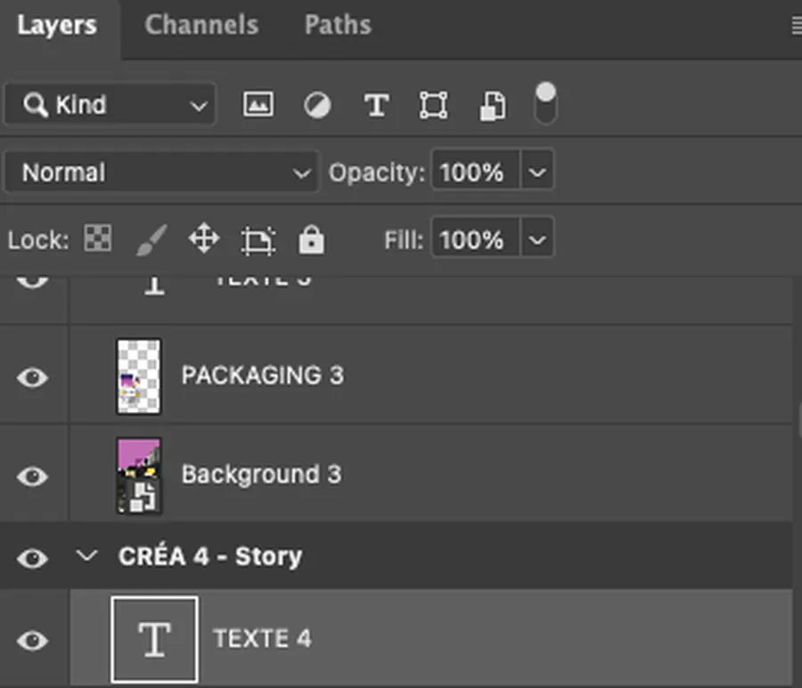
Named by role and story number: TEXTE 4, PACKAGING 3, Background 3. The name still makes sense in any language.
Numbers 1, 2 and 3 match the boxes on the screenshots above. The text-box pair shows different stories (CRÉA 7 before, CRÉA 4 after), because those were the boxes selected in each screenshot.
Translation test
Why it matters:
put in a longer language.
A country team types straight into these boxes, and German is often much longer than English. Here is the same headline in both, in the agency's box and in mine.
Before · the agency's box
English
German
After · my rebuilt box
English
German
Illustration made for this case study, not a client file. The English headline is from the real file (CRÉA 7); the German is a straight translation.
For a country team typing into it, that's the difference between a template that works and one that breaks.
5 product lines × 3 sizes (1080×1920, 1200×1200, 1200×628) = 15 templates, in about 5 days and 25+ hours.
Motion
Seven video templates.
Three sizes each.
Next came 7 video templates in Bynder's video studio, each in 1:1, 9:16 and 16:9. The agency's After Effects files wouldn't open on my M1 Mac. So I re-saved them on a friend's Windows PC in a version both could open, and told Ceva to ask agencies for that from the start.
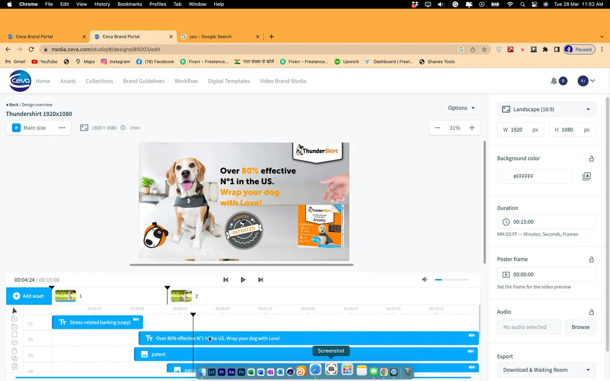
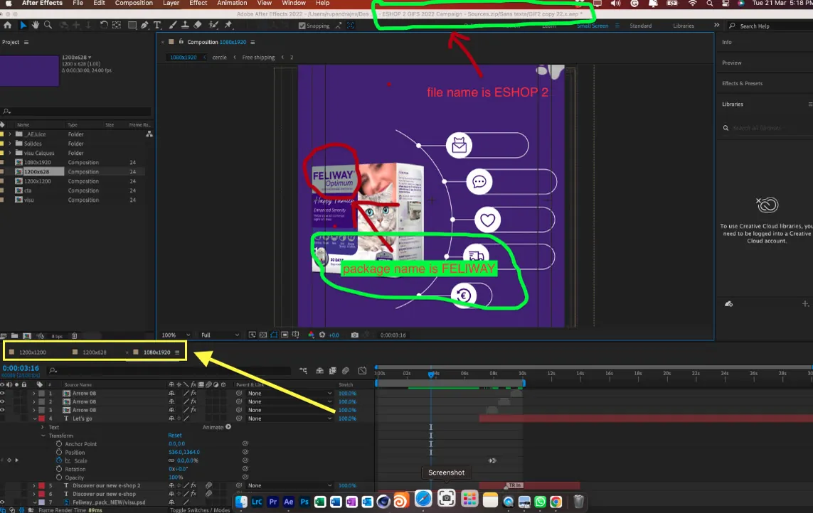
What went wrong
I built 21 videos
when 7 would do.
Nobody had shown me that one Bynder video template can hold all three sizes. I assumed I shouldn't use a feature I hadn't been told about, so I built every size as its own design: 21 instead of 7.
When I found out, I rebuilt them as 7 templates with the 3 sizes inside each one. Extra work for me, and far fewer files for the country teams to pick from.
Before · 21 separate designs
After · 7 templates, 3 sizes inside
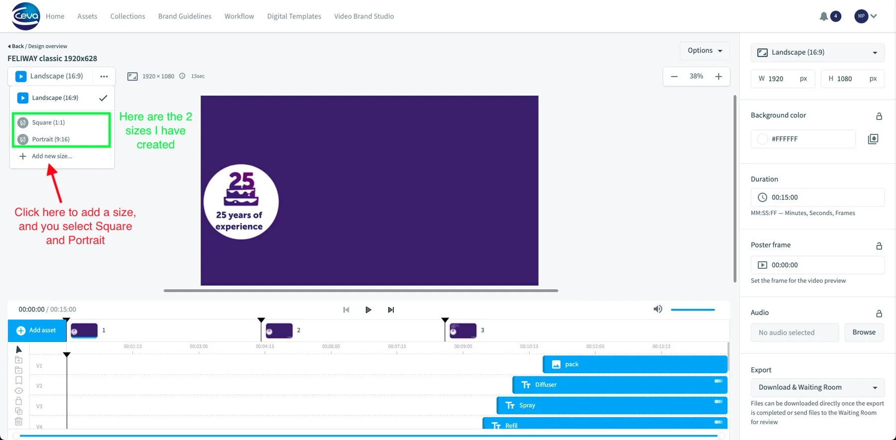
The lesson
If a tool might already do it, ask before building around it.
Problem solving
When it broke,
I found out why.
Some problems only showed up once real people used the templates. Each time, I traced the cause before fixing it.
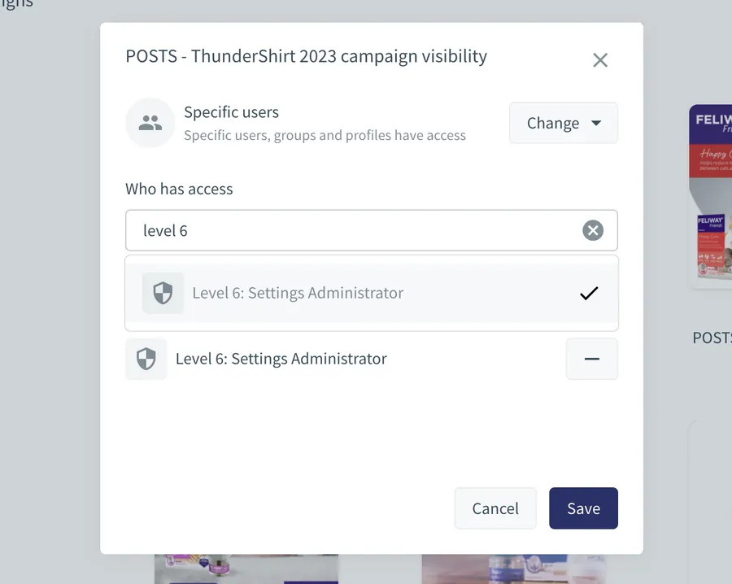
Teams couldn't see campaigns.
The new campaigns were hidden from country teams. I traced it to the visibility setting and fixed it: specific users, level 6.
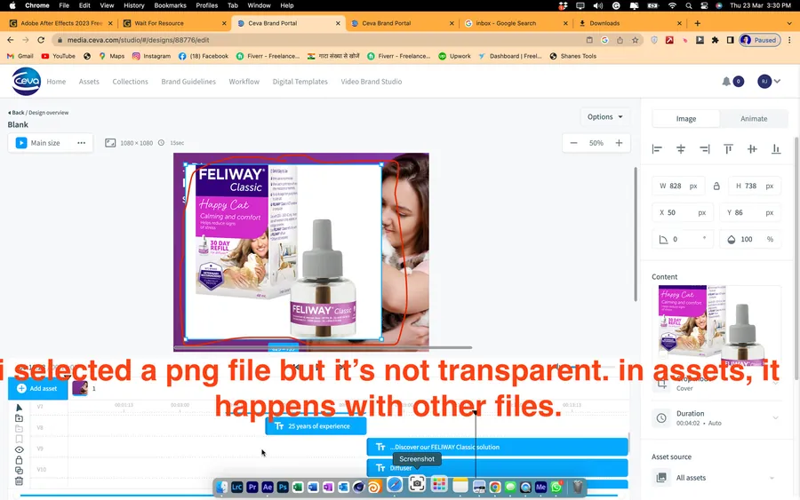
Images with a white box.
Some product PNGs weren't transparent, so a white box showed behind them. I flagged the files so they could be re-exported.
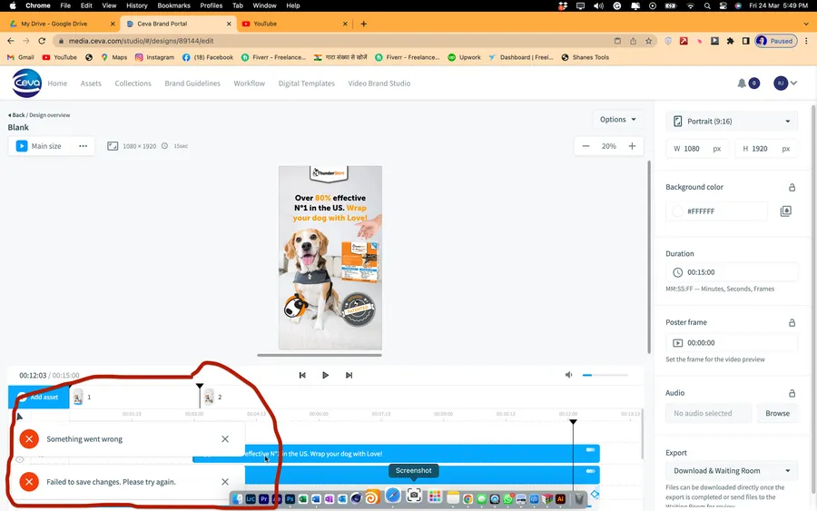
Videos that wouldn't save.
Some video templates broke. The cause: assets deleted from the asset bank. I warned the team not to delete anything a template uses.
Result
The campaigns launched.
The client was happy.
“Very good work!”
Ceva e-content specialist
“You are the first graphic designer working on it.”
Ceva e-content specialist
“Everything is good for me.”
Ceva e-content specialist
What I can show
15 image templates and 7 video templates, delivered across 6 milestones, all paid.
What I can't
I don't know how many countries used them, or how the ads performed.
Files
See the files.
Before and after.
A note on what's shown
This work belongs to Ceva Santé Animale and its brands. Out of respect for that, I'm only sharing a small set of samples: the two files above and the screenshots in this case study, which I have permission to use in my portfolio. The full template library stays with the client.